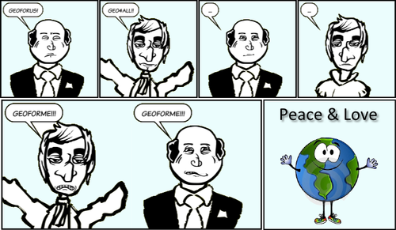
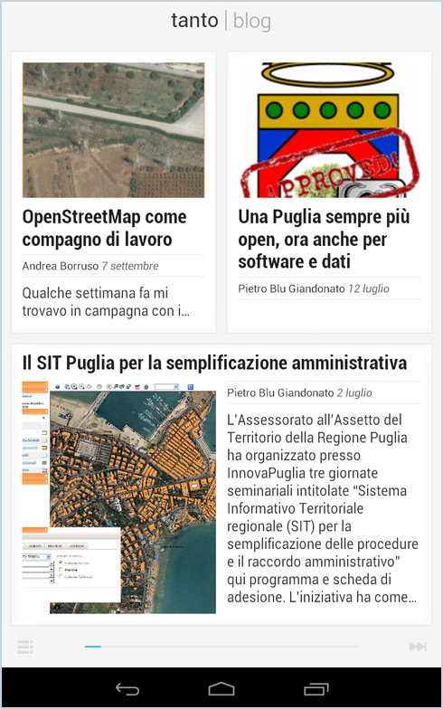
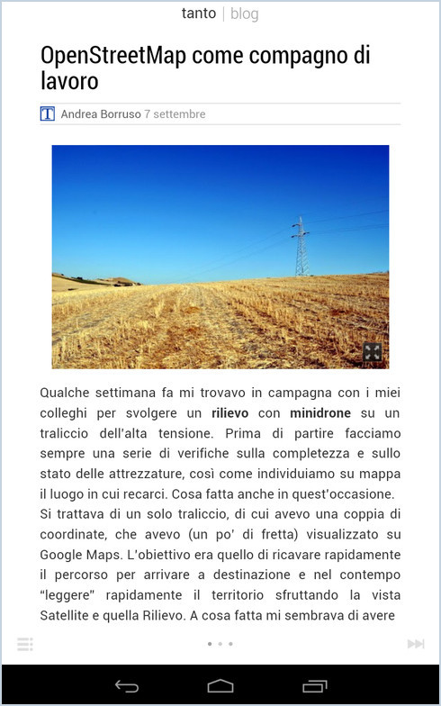

Archivio per la categoria ‘Entropia’
3 aprile, 2013 | di redazione
Il tema degli OpenGeoData è importante e pensiamo che meriti hic et nunc un’attenzione speciale. E’ indispensabile la crescita di una consapevolezza diffusa del loro valore, così come è necessario porre l’attenzione sulle modalità di implementazione del modello e verificarne l’impatto in termini di valore aggiunto; per professionisti, aziende, decisori e cittadini.
Vogliamo creare un gruppo di lavoro aperto a tutti e che si appoggerà anche su quanto di buono e utile è stato fatto in analogia per il tema più generale degli OpenData.
Tre i temi principali che, in questa prima fase, vorremmo trasformare in azione:
- Formazione – iniziative formative a medio, lungo termine riguardanti la formazione su specifiche questioni di fondo (metadati, INSPIRE, standard, soluzioni tecnologiche, ecc.).
- Informazione – iniziative di tipo divulgativo (filmati didattici e di promozione), così come webinar di taglio informativo su argomenti di approfondimento.
- Buone prassi – segnalazione e report di iniziative e progetti riguardanti geoportali e portali open data, standard, apertura e liberazione di dati (ma non solo) che possono essere prese a modello.
Pensiamo sia necessario il contributo di molti, sia in termini di contenuti che di modalità di azione. Per questa ragione abbiamo pensato di creare uno spazio in cui ognuno potrà proporre, condividere, commentare e valutare in modo costruttivo idee utili sul tema.
E’ stata aperta una community su ideascale (geodatiliberi.ideascale.com), non vi resta che aprire un account e cominciare a proporre e interagire con gli altri. Troverete le tre categorie di cui sopra nelle quali inserire le idee e proposte, in modo tale da rendere il tutto più organico. A supporto di questo ideario, è stata creata anche una mailing list.
Perché OpenGeoData non sia soltanto un obbligo normativo, una moda o un sfogo per il “geogeek“.
immagine realizzata a partire dalla foto di Diego Dalmaso
Insieme a :
Posted in Entropia, osgeo | No Comments »
21 dicembre, 2012 | di redazione
Auguri di buone feste da tutta la redazione di TANTO!!
Posted in Entropia | 4 Comments »
19 novembre, 2012 | di Sergio Farruggia
-Ciao, come va?-
-Quando son qua bene! -
-E allora vieni più spesso. Cosa fai, sei in pensione?-
-No, lavoro in proprio.-
-Ma che lavoro fai?-
-Uhm, mi occupo di mappe al calcolatore.-
-Bello. Senti, ma ci sono carte militari della zona?-
-Certamente, al 25:000. Anche delle Regioni, forse anche a scale maggiori.-
-Mi piacerebbe andare per funghi con una di queste in mano. Tra M. e P. è tutto un bosco e ci saranno bene sterrate che l’attraversano.-
-Ti cerco che mappe ci sono e ti dico.-
-Ti ringrazio.-
-Buona, vado a prepararmi cena.-
-As vugumma.-
Coincidenze! Ho incontrato Saverio, un amico d’infanzia che vive tutto il giorno all’aria aperta, l’altra sera, quando finalmente mi ero ritagliato il tempo per scrivere questo post, che ha un obiettivo preciso: promuovere una campagna per diffondere l’esistenza e la conoscenza del Repertorio Nazionale dei Dati Territoriali, RNDT.
L’idea l’ho lanciata commentando la presentazione svolta da Gabriele Ciasullo, all’ultima conferenza AM/FM GIS, il 27 settembre scorso. L’ha twittata subito Renzo Carlucci.
L’RNDT è il primo esempio di catalogo dell’informazione geografica digitale in Italia: rappresenta lo strumento per ricercare, attraverso i metadati, i dati territoriali -e relativi servizi- disponibili presso le pubbliche amministrazioni. Consente di valutarne l’idoneità per le proprie esigenze e ottenere le opportune indicazioni sulle loro condizioni di accesso e utilizzo.
Lo strumento è stato formalmente istituito nel 2005 (articolo 59 del Codice dell’Amministrazione Digitale). Trascorsa la fase di progettazione e realizzazione, superata quella di sperimentazione, dai primi mesi del 2012 l’RNDT è in esercizio: l’ultimo rapporto (ottobre) riporta che sono documentati più di duemila dataset e servizi; hanno inserito informazioni tre organi centrali, due autorità di bacino, nove regioni, quattro province e un comune.
L’RNDT, insomma, sta muovendo i primi passi. La finalità della sessione “Il repertorio dei dati territoriali: strumento e motore per l’utilizzo della informazione geografica digitale” organizzata da AM/FM GIS ha avuto proprio lo scopo di presentare le iniziative intraprese sia per sollecitarne il popolamento da parte degli enti pubblici, sia per favorirne l’utilizzo da parte di tutti i soggetti interessati all’Informazione Geografica.
Mentre le istituzioni deputate al popolamento del Repertorio adempiono ai loro doveri (va ricordato lo strumento fa parte delle basi di dati di interesse nazionale, articolo 60 del CAD), anche la comunità geomatica può contribuire al suo sviluppo: aiutando a farlo conoscere, stimolando l’espressione di osservazioni, suggerimenti sull’accessibilità, la fruibilità ecc. dello strumento, anche perché, come si legge sul sito, “Il portale del RNDT è in continua evoluzione”. Vediamola come condizione necessaria, chiaramente non sufficiente, perché il suo popolamento (e il suo continuo aggiornamento) sia stimolato ad accelerare.
Usiamo il logo RNDT sulle nostre homepage e invitiamo a fare altrettanto: blogger, Ordini Professionali, aziende, associazioni, istituzioni… mettiamo l’RNDT nella nostra “cassetta degli strumenti”. Un primo strumento: se l’idea funzionerà potremo aggiungerne certamente altri.
L’informazione geografica digitale rappresenta anche una componente di infrastruttura per le strategie d’implementazione dell’Agenda Digitale italiana e fonte informativa indispensabile per la realizzazione di servizi innovativi nel contesto del paradigma “Smart Cities”. Questa minima azione può essere un piccolo apporto della comunità geomatica, un semplice esempio di come questo modello possa essere interpretato. Facciamo che l’RNDT diventi “l’elenco telefonico” dei dati territoriali italiani.
Chissà, tra non molto tempo anche Saverio, il mio amico d’infanzia che non sta tutto il giorno davanti a uno schermo, saprà che, rivolgendosi all’ufficio comunale o semplicemente chiedendo a qualche compaesano “sempre connesso”, potrà conoscere da chi e come procurarsi una mappa topografica.
TANTO inserisce oggi nella sua homepage il logo (con link) del
Repertorio Nazionale dei Dati Territoriali (RNDT). Attualmente questo strumento sta muovendo i primi passi, ma noi desideriamo che entri a fare parte della “cassetta degli attrezzi” di ogni geomatico e, in prospettiva, di ogni cittadino italiano. Non siamo da soli, ma insieme a:
Posted in Entropia | 8 Comments »
26 ottobre, 2012 | di redazione

Un sentito grazie a
Gerlando Gibilaro che ha disegnato con
toonlet la striscia, e all’associazione a delinquere di stampo geomatico che l’ha pensata
Posted in Entropia | 3 Comments »
8 ottobre, 2012 | di Andrea Borruso
Da poco ho acquistato a 150€, in modo molto fortunoso e non ripetibile, il meraviglioso Nexus 7. I tablet sono (per me) principalmente degli strumenti di lettura; da quando ne ho uno, ho apprezzato sempre di più le applicazioni a questo dedicate. Lo facevo già dal mio smartphone Android, ma farlo sul tablet è un altro mondo. Sia per le maggiori dimensioni dello schermo, che per la progettazione delle GUI che sfruttano in modo creativo e efficace lo spazio in più.
Leggere è un’attività bella e necessaria, alla quale cerco di dedicare più tempo possibile. La lettura di sorgenti web tipicamente passa da un browser, ma non sempre è piacevole farlo: caratteri piccoli, colori sbagliati, troppa distrazione dovuta a pubblicità o ad articoli correlati, finestre di pop-up, musichette che partono in modo inspiegabile, ecc. Da tempo per fortuna esistono diversi modi per superare questo tipo di ostacoli (prima o poi il geek in blu ci farà un post) e una di queste è Google Currents. Si tratta di un’applicazione di lettura per dispositivi Android, per iPad e iPhone per sfogliare, leggere e condividere i contenuti provenienti da numerose pubblicazioni web e presentate in un formato rivista sfogliabile. E’ possibile inoltre trasformare le iscrizioni su Google Reader o qualunque blog o feed che seguiamo in una edizione simile a una rivista, con un testo molto leggibile e riposante per gli occhi e senza la presenza di contenuti accessori che potenzialmente potrebbero distarci.
Google ha reso disponibile anche uno strumento per chi (come noi) pubblica contenuti, che consente di inserire i propri prodotti nell’archivio delle fonti disponibili su Currents, e di personalizzare un po’ la struttura e la veste grafica della rivista di output. Noi lo abbiamo usato e per aggiungere TANTO basterà – una volta installata l’applicazione – aprire questo URL in un browser e seguire le semplici istruzioni a video. Una volta inserito lo vedrete elencato tra le vostri fonti.

Per leggerci basterà fare click sul nostro logo, si aprirà la prima pagina della rivista, e sarà possibile sfogliarla con un dito sullo schermo del vostro terminale. Alla prima apertura verranno visualizzati gli ultimi articoli pubblicati, con una vista a griglia con in evidenza i titoli, un’eventuale immagine in evidenza, e (quasi sempre) una porzione del testo del post.

Il bello è però a mio avviso il singolo articolo, impaginato in modo da rendere la lettura molto gradevole e scevra da distrazioni.

Tutto questo è possibile grazie a formati standard di pubblicazione come quello degli RSS, e a motori di publishing come WordPress. Averli alle spalle ha reso la pubblicazione di TANTO su Google Currents una cosa semplice e rapida; per fortuna si tratta di strumenti a disposizione di tutti.
Buona lettura!
Posted in Entropia | 1 Comment »


{kind=link}